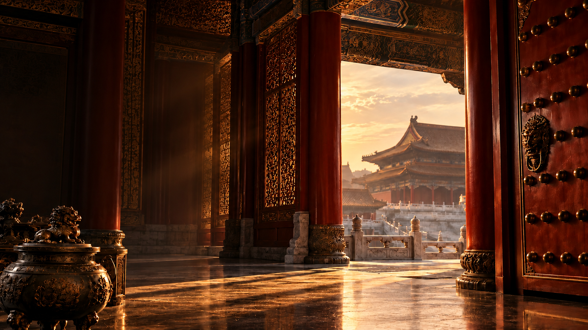
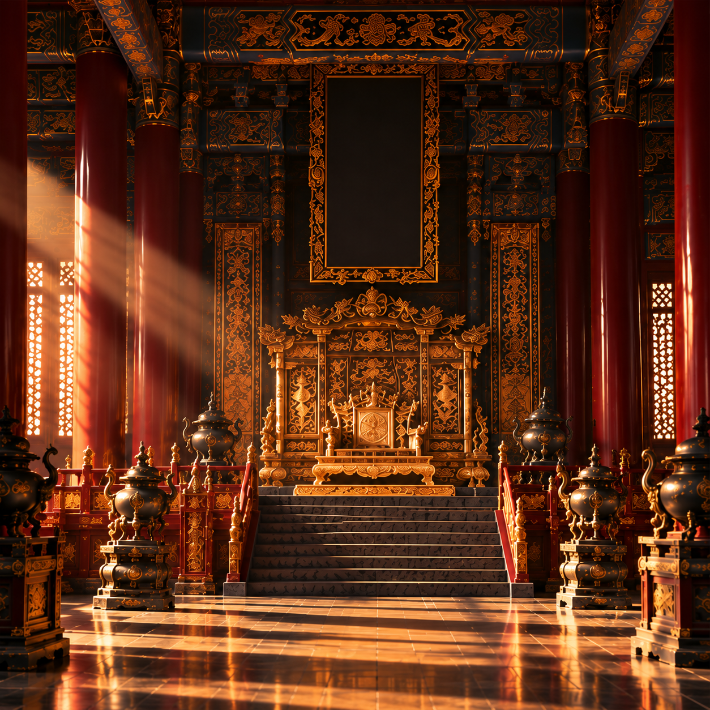
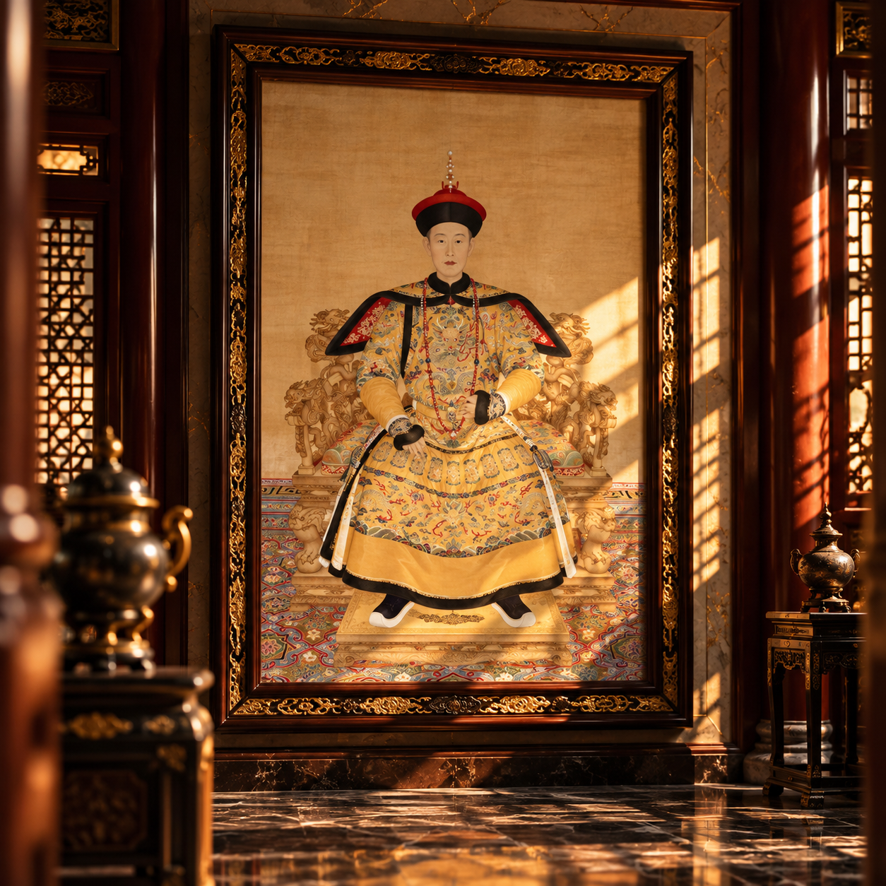
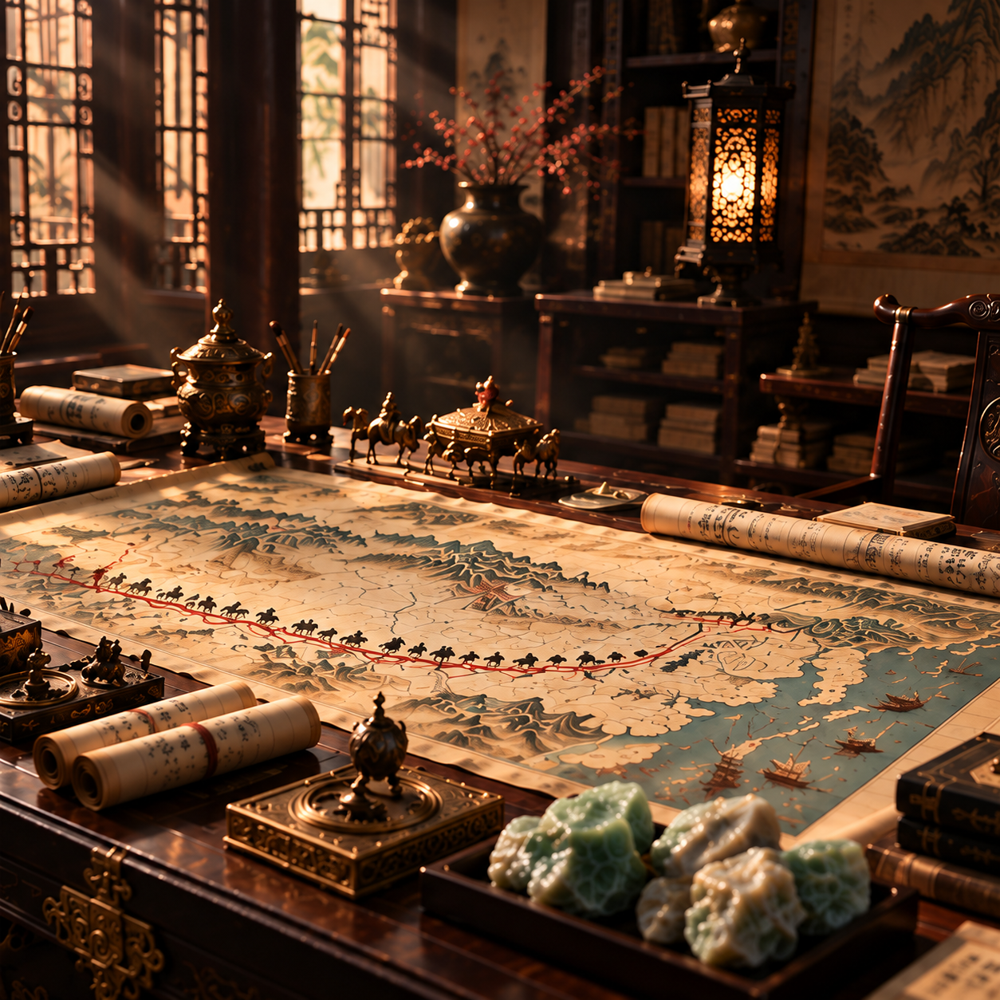
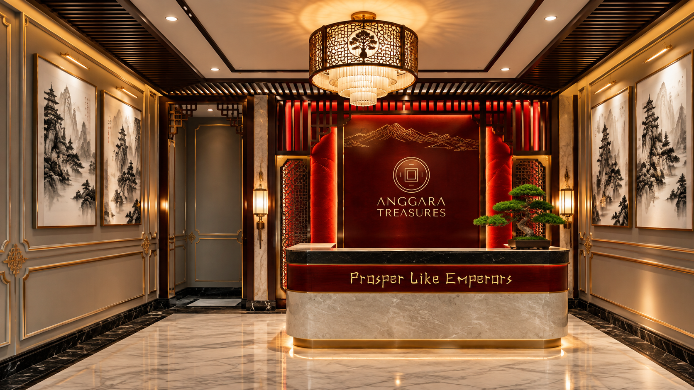

THE IMPERIAL HERITAGE
An extraordinary chapter in Chinese history, distinguished by imperial patronage, artistic mastery, and a profound appreciation for craftsmanship.
EXPLORE THE QIANLONG ERA1644 — HERITAGE
In 1644, the Manchu entered Beijing, establishing Qing rule under Emperor Shunzhi. A new imperial era emerged, continuing and refining centuries of artistic tradition. Jade remained among its most revered materials, symbolizing purity, protection, and imperial authority.
"A new era began,
shaping a lasting legacy."


1736 — QIAN LONG
Emperor Qianlong (1736–1795) presided over one of the most prosperous and culturally refined eras in Chinese history.
Under his reign, the arts, craftsmanship, and imperial aesthetics reached extraordinary heights, reflecting a harmony of power, culture, and refinement.
"A legacy of prosperity,
refinement, and enduring influence."
18TH–19TH CENTURY — HERITAGE
Across Asia's trade networks, precious materials — including green jadeite from Myanmar — made their way to China. In the hands of imperial artisans, they were transformed into works of art, uniting craftsmanship with deeper meaning.
"From distant origins,
an enduring artistic legacy."

1912 — HERITAGE
In 1912, the Qing Dynasty came to an end, closing more than two centuries of imperial rule. Yet its artistic heritage endured. Its craftsmanship, cultural traditions, and reverence for jade continued to inspire generations beyond the imperial court.
"An empire may end.
Its heritage lives on.."

THE IMPERIAL HERITAGE
The imperial era may have passed, yet its appreciation for harmony, craftsmanship, and intention continues to inspire.
At Anggara Treasures, these enduring values find contemporary expression through a considered approach to prosperity.
"Honouring the past.
Shaping what comes next."